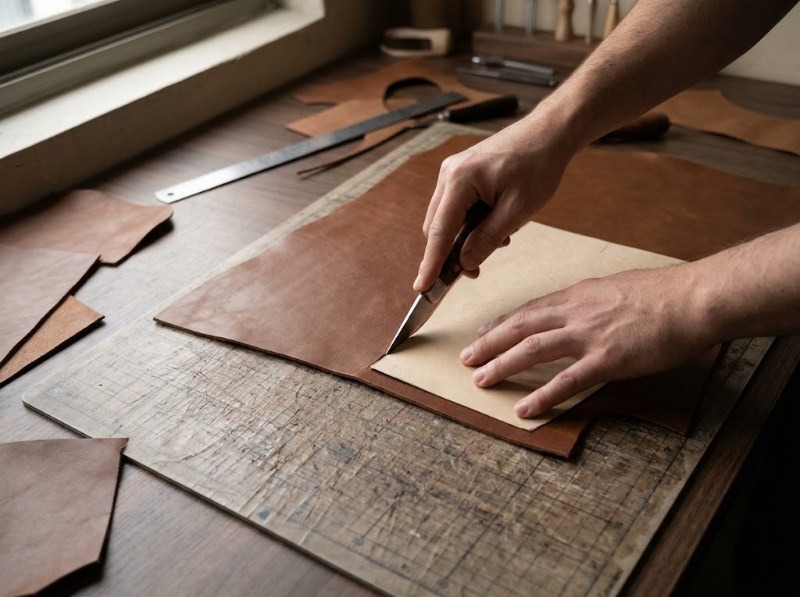
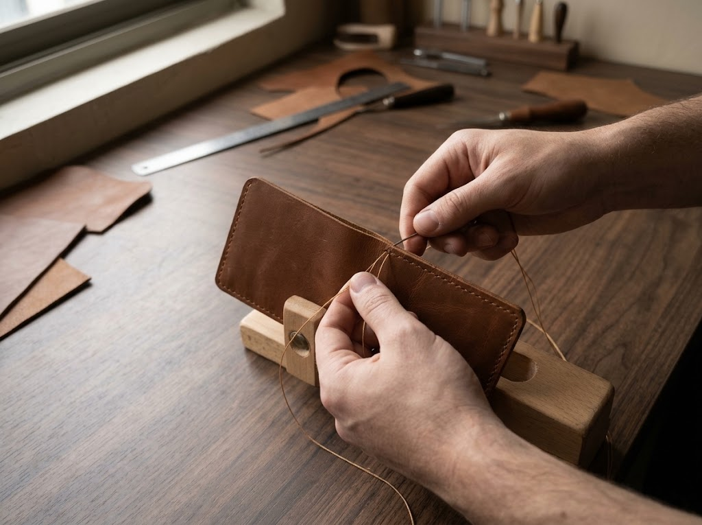
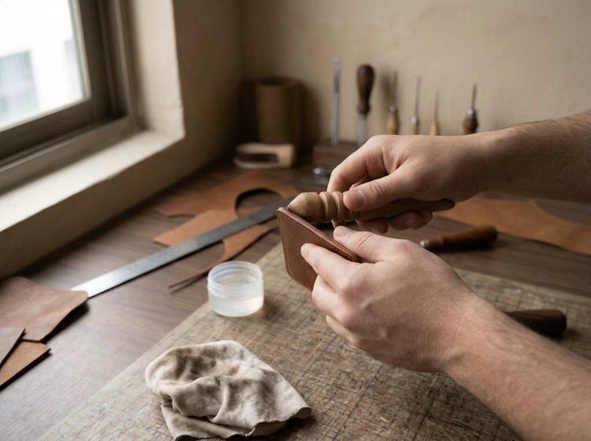

01

MATERIAL SELECTION
Understand the hide
Leather can vary in grain, thickness, flexibility, and surface finish. Choosing a suitable material helps shape appearance and use.
A GENERAL OVERVIEW
This is general industry information about leather product-making, not a claim that every step or method is used at Perfect Leather. Construction depends on the product design and intended use.
MATERIAL SELECTION
Leather can vary in grain, thickness, flexibility, and surface finish. Choosing a suitable material helps shape appearance and use.

PATTERN & CUTTING
Patterns guide the shape and dimensions of each component. Careful cutting helps parts align during assembly and can reduce avoidable waste.

STITCHING & ASSEMBLY
Depending on the design, components may be stitched, bonded, folded, or secured with hardware. Construction choices affect function and appearance.

FINISHING & REVIEW
Edges, seams, closures, and surface details can be checked and refined before a product is ready for use or presentation.